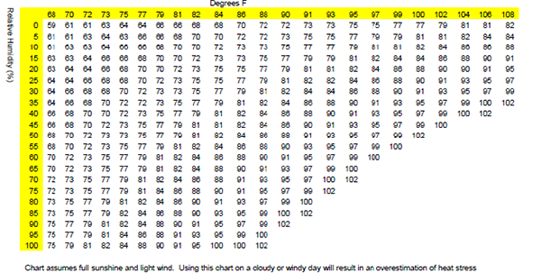

6.J Heat/Cold Stress Management
06.J.04–06.J.06
06.J.04 Cold Stress Management Plan (CSMP). A CSMP shall be incorporated into the APP or Project SOH Plan for the following work activities:
- Extended work duration in refrigerated rooms;
- Work in cold environments taking into consideration heat loss from wind speeds (e.g., when air temperature or wind chill could drop below 40°F (4.4°C);
- Extended bare-hand work in cold weather;
- Working with hands or parts of the body in cold water for periods greater than 10-12 minutes or potential cold water emersion;
- Working in snow or ice.
06.J.05 The CSMP shall address:
- Training on the signs, symptoms, and first aid for hypothermia, frostbite, and trench foot;
- Control and prevention measures to include PPE, engineering and administrative controls, eating, drinking, and safe work practices;
- Conditions and limitations in which bare hand work can be performed;
- Frequency. Air temperature and wind speed shall be taken should be taken at least every 4 hours when the temperature drops below 20°F (-6°C) and wind speed exceeds 5 mph (8 kmph) or broadcasted wind chill factors may be used if the reading is within 10 miles of the location.
FIGURE 6-1
Approximate Wet-Bulb Globe Temperature (WBGT) Chart

06.J.06 In cold environments the following guidelines shall be followed to prevent cold-related injury.
- Warming shelters should be made available nearby when the wind chill drops below 10°F (-12°C).
- A change of clothing shall be available if there is an opportunity for a worker to become wet.
- When the wind chill drops below 0°F (-17°C), the following work practices shall apply.
- Workers shall use the buddy system to watch for signs and symptoms of cold related injuries or illnesses.
- The work rate shall be moderated to prevent sweating.
- Heat shelters shall be provided.
- New workers shall be given time to acclimate.
- Workers exposed to -15°F (-26°C) shall use the work/warm-up schedule specified in the ACGIH TLVs/BEIs booklet.
- If any extremity or body part is immersed in water where the air temperature is below 40°F (4°C), the employee shall be required to change any clothing that became wet and to dry off in a warm area.
- Environmental monitoring. As the wind chill drops below 20°F (-7°C), the air temperature and wind speed (wind chill index) shall be monitored a minimum of every 4 hours or as warranted.
- When the wind chill falls below 0°F (-17°C), the air temperature and wind speed shall be monitored every 2 hours or more frequently if it drops below this level.
{kind=link}